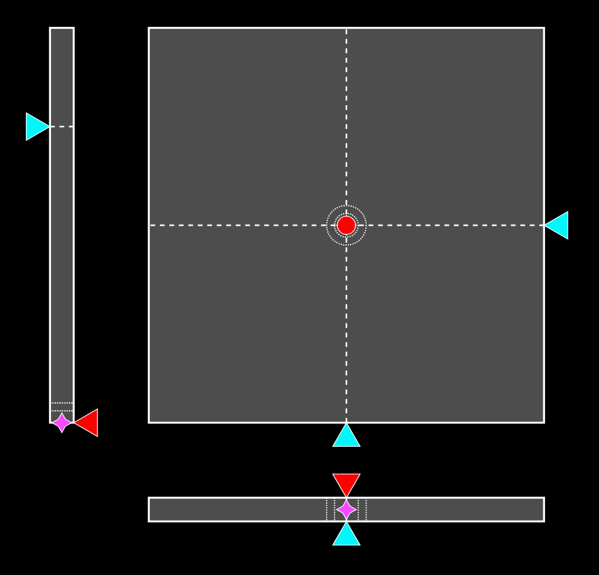

Instruments
Python package lidia can be used with MARSH starting with version 0.10 to provide instrument visualisation.
The output is rendered in a web browser, so it can be accessed from other computers, or embedded in visualisation software
Installation
The package can be installed using any of these commands:
uv tool install lidia
pipx install lidia
pip install lidia # preferably inside a virtual environment (venv)
Usage
The package has multiple sources of data to choose from, in this case start it like this:
lidia marsh
Primary Flight Display
By default displayed at localhost:5555/pfd. Magenta markers indicate target value.

Controls position
By default displayed at localhost:5555/controls. Central square shows cyclic control, left bar collective position, and lower bar, pedal position. Red/yellow/green arrows and circle indicate current position, blue arrows and dashed lines trim. Magenta stars are desired positions with dotted lines for desirable and adequate margins.
